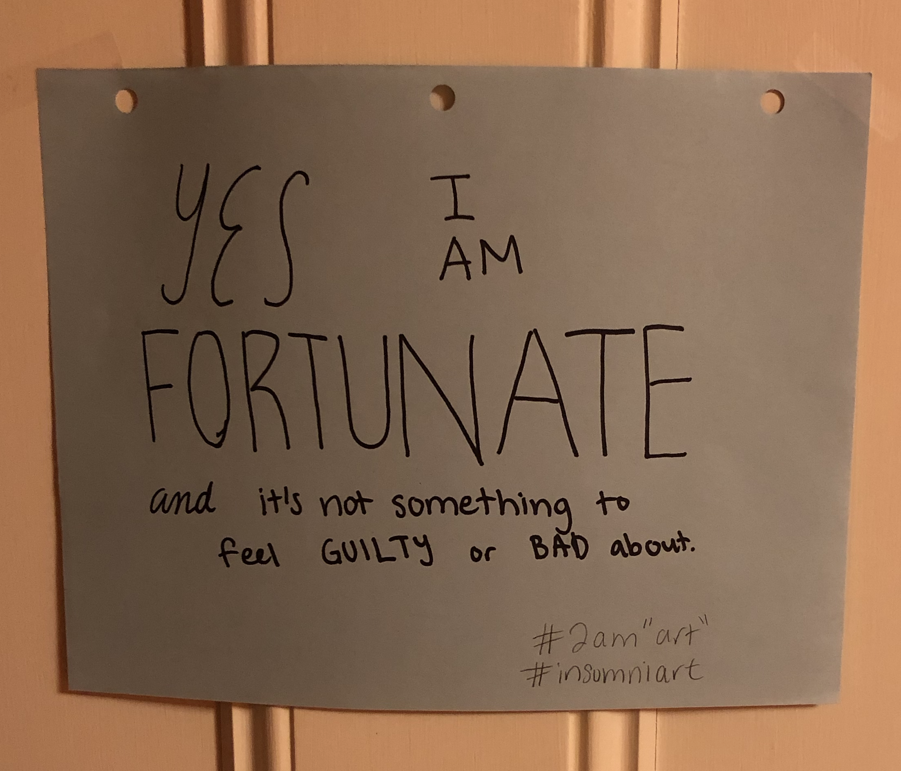

Larger Goal
I aim to use my privilege as an MIT student living in a developed country to improve society.
Things

While there are many problems in the world, there are so many aspects of my life that I have taken for granted. I appreciate that
- I have clean, running water.
- I get to enjoy delicious vegetables with my meals.
I envision a world in which...
- The news we read informs and unites us.
- The education system teaches people life skills such as
- Relationships
- Finances
- And COMPASSION/EMPATHY so people can "agree to disagree" and have productive conversations about important issues
- The food system provides sustainable and healthy food by default such that
- There is minimal food waste
- The process of growing food sequesters carbon and contributes to a healthier environment
- Animals are treated with care
- And people are healthier so that fat medical bills are mostly a thing of the past
- The economic and political systems incentivize businesses and politicians to do good so that
- People are informed with facts
- People buy only what they need
- And society is prepared to take on existential risks that threaten the prosperity of the human race and future generations
The above list is by no means exhaustive, as there are many other aspects to an ideal world. Perhaps some of my viewpoints are mistaken. Feel free to contact me if you have any thoughts that would make me a more informed / effective citizen.
Making Progress
Learning is my focus right now.
Academically, I’m interested in
- Computer Science as a tool to solve world problems
- Economics to understand how the world works
- Biology because life
Outside of academics, I’m learning
- Programming (not the same as Computer Science)
- The nuances behind effective altruism
- Complex Systems
- Entrepreneurship
- From cool people I’ve reached out to and asked about life!
Things I do besides learning right now include
- Doing research on news bias
- Running the MIT Effective Altruism Club
- Creating a blog to share
- Meeting cool people